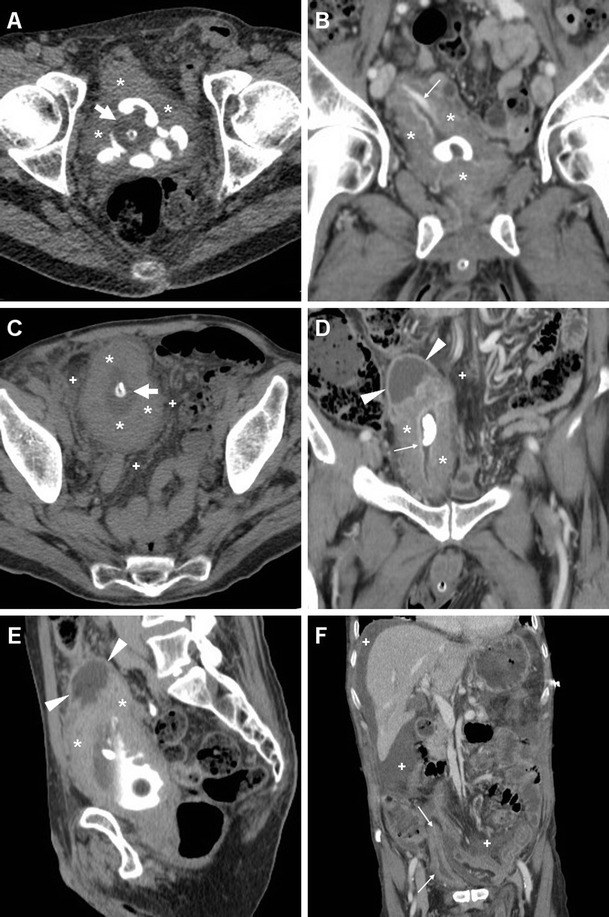
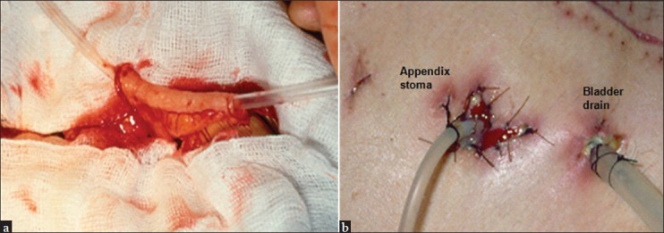
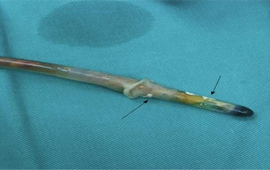

677 — Chăm sóc & biến chứng ống dẫn lưu trên xương mu (SPC) ở trẻ: tắc – sỏi – nhiễm đường hầm & khi nào chuyển CIC/Mitrofanoff / Suprapubic catheter in children
Tags: pattern:bien-chung-catheter pattern:soi-bang-quang pattern:nhiem-trung-duong-ham vung:bang-quang-nieu-dao-nhi vung:thanh-bung-duoi score:EAN-INUS-2025 protocol:sieu-am protocol:XR protocol:CT protocol:cystography incidentaloma:soi-bang-quang
Mức chắc chắn (certainty): tổng hợp y văn (literature synthesis) — nhóm tự biên từ bài mở toàn văn (Eur J Neurol 2025, PMC11984325 — guideline EAN/EFAS/INUS; J Med Eng Technol 2015, PMC4673556 — sinh học catheter; Insights Imaging 2016, PMC5028337 — hình ảnh nhiễm trùng đường tiểu dưới; Libyan J Med 2010, PMC3066753 — catheter đóng vảy; Ann R Coll Surg Engl 2012, PMC3954289 — kỹ thuật SPC; Indian J Urol 2013, PMC3822348 — Mitrofanoff; Pediatr Nephrol 2008, PMC2335291 — bàng quang thần kinh spina bifida; J Indian Assoc Pediatr Surg 2024, PMC11762777 — tổn thương niệu đạo do catheter ở trẻ trai). Ảnh: 2 CC BY/CC BY-NC dùng nguyên bản, 1 CC BY-NC-SA dùng nguyên bản (không crop/ghép). Ca minh họa người lớn được ghi rõ bối cảnh.
1. Tổng quan — ống SPC là "cửa thoát" tạm, nhưng đường hầm là mô sống: vì sao nó tắc, đóng vảy, nhiễm
- Chỉ định ở trẻ: (a) sau chấn thương niệu đạo (đứt niệu đạo sau do vỡ khung chậu, rách niệu đạo do đặt catheter) — dẫn lưu trên xương mu để niệu đạo nghỉ 1–2 tuần; (b) bàng quang thần kinh khi CIC không khả thi (bàn tay không đủ chức năng, gia đình không làm được, bàng quang áp lực cao); (c) tắc nghẽn đường ra (van niệu đạo sau, hẹp niệu đạo) chờ mổ.
- Vì sao SPC được ưu tiên hơn catheter niệu đạo khi phải dẫn lưu dài hạn: guideline EAN/EFAS/INUS 2025 khuyến cáo SPC ưu tiên hơn niệu đạo vì giảm tổn thương niệu đạo (tạo đường giả, hẹp, rách cơ thắt, hypospadias do chấn thương) và dễ chăm sóc khi ngồi/hoạt động tình dục; nhưng phải cùng quyết định với gia đình vì có nguy cơ riêng (PMC11984325).
- Ngưỡng định lượng phải nhớ:
- Tổn thương niệu đạo do đặt catheter ở trẻ trai: 13,4/1.000 lần đặt (PMC11762777) — đây chính là lý do nhiều ca chuyển sang SPC.
- Đường hầm cần ~2 tuần để "thành thục" trước khi dùng làm đường vào bàng quang (thay catheter qua đường hầm, đặt guidewire) (PMC3066753).
- Mọi catheter lưu đều bị vi khuẩn xâm nhập sau ~1 tháng; tuổi thọ cơ học của bóng Foley ~12 tuần — nghĩa là nhiễm khuẩn là quy luật, không phải biến chứng (PMC4673556).
- Cấy nước tiểu — ngưỡng đúng đường lấy: > 10⁴ cfu/mL (lấy giữa dòng), > 10² cfu/mL (qua CIC), và bất kỳ mọc nào trên chọc hút trên xương mu (PMC11984325). Cấy qua túi nước tiểu/leg bag là sai — chỉ lấy từ catheter mới đặt hoặc cổng lấy mẫu.
- TẠI SAO ống "đóng vảy" (encrustation) — vật lý + vi sinh:
- Vi khuẩn sinh urease (Proteus mirabilis điển hình) phân hủy urê → NH₃ → nước tiểu kiềm → kết tủa struvite (MgNH₄PO₄) và hydroxyapatite trên biofilm phủ catheter.
- Tinh thể lắng quanh lỗ thoát và lòng ống → tắc; mảnh vụn bong ra thành nhân sỏi bàng quang, và sỏi lại nuôi vi khuẩn → vòng xoắn tắc–nhiễm–sỏi (PMC4673556).
- Tắc catheter là cấp cứu: áp lực bàng quang cao → trào ngược lên niệu quản, đau, nguy cơ nhiễm trùng huyết; xử trí là thay catheter ngay, không chờ.
- TẠI SAO nhiễm đường hầm trông nặng trên CT: đường hầm xuyên cân, mỡ trước bàng quang và cơ thẳng bụng; nhiễm khuẩn lan theo mô mỡ lỏng → viêm mô tế bào, áp-xe thành bàng quang, khí trong thành; trên CT thấy dày thành bàng quang, mô mỡ quanh bàng quang thâm nhiễm, tụ dịch/khí. Vì vậy CT có cản quang là chìa khóa khi trẻ sốt + đau bụng dưới + SPC (PMC5028337).
- Phản biện (fidelity): phần lớn bằng chứng về tần suất biến chứng SPC ở trẻ rất mỏng; đa số số liệu đến từ người lớn có catheter lưu dài hạn và từ bàng quang thần kinh. Đừng trích các tỷ lệ của người lớn như thể là của trẻ — trong bài này mọi số của người lớn đều được ghi rõ nguồn/bối cảnh.
2. Mẫu hình (pattern) + chẩn đoán phân biệt theo thời điểm (Gamut)
- Khuôn 1 — Ngay sau đặt (0–72 giờ): đau, chướng, không ra nước tiểu. Gamut: đặt sai vị trí (vào niệu đạo/ổ bụng/mạc treo) vs thủng ruột vs máu tụ/hematuria vs bàng quang chưa căng đủ. Chốt: không có nước tiểu + đau nhiều + bụng phản ứng → nghi đặt sai/thủng; siêu âm tại giường tìm bóng catheter trong lòng bàng quang là bước đầu.
- Khuôn 2 — Vài tuần: tắc tái diễn, nước tiểu đục, cặn. Gamut: đóng vảy/encrustation vs sỏi bàng quang vs co thắt bàng quang vs catheter bị gập/kẹt. Chốt: tắc tái diễn nhiều lần = phải tìm sỏi (PMC4673556); siêu âm thấy điểm tăng âm kèm bóng lưng quanh bóng catheter, X-quang thấy cản quang dạng vòng/chuỗi quanh catheter.
- Khuôn 3 — Sốt + đau bụng dưới + rỉ mủ quanh lỗ SPC. Gamut: nhiễm đường hầm/viêm mô tế bào vs áp-xe thành bàng quang vs viêm thận–bể thận vs viêm phúc mạc do thủng muộn. Chốt: CT cản quang: dày thành bàng quang + mô mỡ quanh bàng quang thâm nhiễm + tụ dịch/khí; khí trong thành bàng quang = thể nặng (PMC5028337). Siêu âm thận để loại ứ nước/thận ứ mủ.
- Khuôn 4 — Muộn (tháng–năm): chảy máu lỗ SPC, u sùi quanh lỗ, hẹp đường hầm. Gamut: hạt quá sản/xơ vs sỏi kẹt cổ bàng quang vs ung thư biểu mô tại đường hầm SPC (rất hiếm, nhưng có ca người lớn — PMC3198751) vs lộn niêm mạc. Chốt: tổn thương sùi, cứng, chảy máu tái diễn → sinh thiết, không chỉ đốt điện.
- Khuôn 5 — Trẻ "không chịu" ống SPC (đau, rò quanh ống, bong). Gamut: bóng quá căng/ống quá ngắn vs đường hầm chưa thành thục vs co thắt bàng quang vs táo bón/chướng bụng làm tăng áp lực. Chốt: kiểm tra thể tích bóng theo hướng dẫn (thường 5–10 mL ở trẻ, không bơm quá) + cố định ống + điều trị táo bón.
- Gợi nhớ "T.A.M." cho SPC ở trẻ: Tắc (blockage/encrustation), Ap-xe/nhiễm đường hầm, Migration/misplacement (di trú, đặt sai) — cộng thêm sỏi khi tắc tái diễn.
3. Bảng so sánh phân biệt (ma trận đối chiếu)
| Tình huống / thực thể | Hình ảnh điển hình | Chốt vào (rule-in) | Chốt loại (rule-out) | Gợi ý xác nhận |
|---|---|---|---|---|
| Đóng vảy catheter (encrustation) | Siêu âm: dày/echo dày quanh bóng và tip; X-quang: cản quang viền quanh catheter; nội soi: cặn vàng–nâu | Tắc tái diễn + cặn/đục + cấy Proteus | Catheter trơn, không cặn, tắc do gập ống → không phải đóng vảy | Thay catheter + soi bàng quang nếu còn cặn |
| Sỏi bàng quang quanh catheter | Siêu âm: điểm tăng âm + bóng lưng, di động quanh bóng; X-quang/CT: sỏi cản quang ôm catheter | Tắc tái diễn + sỏi thấy trên US/CT | Bóng catheter bơm căng (echo dày, không bóng lưng) → không phải sỏi | CT không cản quang (sỏi acid uric vẫn thấy), nội soi tán sỏi |
| Nhiễm/áp-xe đường hầm – thành bàng quang | CT: dày thành bàng quang, mô mỡ quanh bàng quang thâm nhiễm, tụ dịch, khí trong thành | Sốt + đau khu trú + CT có tụ dịch/khí | Chỉ đỏ da quanh lỗ, không sốt, CT mô mỡ sạch → viêm da khu trú | CT cản quang; siêu âm dẫn lưu nếu có ổ |
| Viêm thận–bể thận / ứ mủ thận | Siêu âm: thận to, ứ nước, echo dày xoang; CT: dày thành đài–bể thận, giảm ngấm | Sốt cao + đau hông lưng + CRP tăng | Thận bình thường, không ứ nước → không phải nguồn | Siêu âm thận ± CT; cấy máu/nước tiểu |
| Đặt sai vị trí (niệu đạo/ổ bụng) | X-quang: catheter đi lệch đường giữa, bóng ngoài bàng quang; US: không thấy bóng trong lòng bàng quang | Không có nước tiểu + đau + bóng không trong bàng quang | Bóng trong bàng quang, nước tiểu chảy tốt → loại | Chụp bàng quang qua ống (cystography) trước khi dùng |
| Thủng ruột do đặt SPC | CT: catheter xuyên quai ruột, khí/dịch tự do, dày quai | Đau bụng + sốt + khí tự do sau đặt | Catheter trong bàng quang, không khí tự do → loại | CT bụng cấp cứu; mổ nếu thủng |
| Ung thư tại đường hầm SPC (muộn, rất hiếm) | Tổn thương sùi, cứng quanh lỗ, chảy máu tái diễn; MRI/CT: khối xâm lấn đường hầm | Chảy máu + sùi + không lành sau xử trí | Hạt xơ mềm, không lớn sau 4–6 tuần → lành tính | Sinh thiết bắt buộc |

A–F: nhiễm trùng đường tiểu dưới có biến chứng ở bệnh nhân có catheter lưu (ca người lớn — minh họa mô hình hình ảnh, áp dụng cho trẻ): dày thành bàng quang lan tỏa (), mô mỡ quanh bàng quang thâm nhiễm (+), khí trong thành/lòng bàng quang (mũi tên lớn), ổ tụ dịch và dịch tự do (đầu mũi tên). Bóng Foley thấy rõ trong lòng bàng quang. Nguồn: Tonolini M et al., Insights Imaging 2016 (PMC5028337), CC BY 4.0.*4. Protocol — chăm sóc ống, chẩn đoán hình ảnh theo triệu chứng & thuật toán chuyển CIC/Mitrofanoff
- Kỹ thuật đặt (để tránh biến chứng sớm): bàng quang phải căng; rạch ~1 cm, cách khớp mu 2 khoát ngón tay; dùng trocar có lỗ báo nước tiểu xác nhận vào bàng quang; đưa catheter nhanh + bơm bóng ngay; catheter 14 Fr cho người lớn, nhỏ hơn ở trẻ theo tuổi; kháng sinh dự phòng 1 liều (PMC3954289).
- Sau đặt: xác nhận vị trí trước khi dùng đường hầm (chụp qua ống/ siêu âm); chờ ~2 tuần cho đường hầm thành thục rồi mới thay/dùng làm đường vào (PMC3066753).
- Chăm sóc dài hạn (nguyên tắc):
- Không điều trị khuẩn trú không triệu chứng. Chỉ cấy khi có triệu chứng; lấy mẫu đúng (không lấy từ túi) — ngưỡng như mục 1 (PMC11984325).
- Thay catheter theo lịch và khi tắc; catheter bị tắc là cấp cứu, thay ngay.
- Uống đủ nước, xem xét nước uống chứa citrate để nâng pH kết tinh (bằng chứng còn hạn chế) (PMC4673556).
- Không bơm bóng quá thể tích; cố định ống để tránh kéo–bong.
- Theo dõi tăng trưởng/thận (siêu âm định kỳ) ở trẻ bàng quang thần kinh.
- Chẩn đoán hình ảnh — chọn theo câu hỏi lâm sàng:
| Câu hỏi | Bước 1 | Bước 2 | Ghi chú |
|---|---|---|---|
| Ống có trong bàng quang? | Siêu âm tại giường (bóng = cấu trúc echo dày trong lòng) | X-quang bụng thấp | Không thấy bóng trong lòng → nghi đặt sai |
| Tắc do gì? | Siêu âm: cặn quanh bóng, sỏi | X-quang/CT không cản quang | Tắc tái diễn → tìm sỏi |
| Sốt + đau bụng dưới | Siêu âm bụng–thận | CT cản quang (thành bàng quang, mô mỡ, khí, tụ dịch) | Nghi thủng ruột → CT cấp cứu |
| Rò quanh ống/rò bàng quang–da | Chụp bàng quang qua ống (cystography) | CT cystography | Xác định đường rò trước khi sửa |
| Chảy máu lỗ SPC muộn | Soi bàng quang | MRI/CT khung chậu + sinh thiết | Loại ung thư đường hầm |
- Khi nào chuyển khỏi SPC (thuật toán):
flowchart TD
A["Trẻ đang có SPC"] --> B{"CIC có khả thi? tay/gia đình/ý thức"}
B -- "Có" --> C{"Bàng quang dung tích và áp lực chấp nhận? UDS"}
C -- "Có" --> D["Chuyển sang CIC ± thuốc ức chế cơ chế chủ vận / Botox"]
C -- "Không: áp lực cao, dung tích nhỏ" --> E["Xem xét augmentation cystoplasty ± Mitrofanoff"]
B -- "Không: không tự đặt được, không có người chăm" --> F{"Có chỉ định tạo đường dẫn lưu da ổn định?"}
F -- "Có" --> G["Mitrofanoff (ruột thừa/Monti) + đóng cổ bàng quang nếu cần"]
F -- "Không / chưa sẵn sàng" --> H["Tiếp tục SPC + chương trình thay ống, theo dõi sỏi/nhiễm"]
D --> I["Theo dõi: siêu âm thận, UDS, đếm số lần tắc/nhiễm mỗi năm"]
G --> I
H --> I
- Chuyển CIC/Mitrofanoff — ngưỡng thực hành (PMC2335291, PMC3822348):
- CIC là lựa chọn đầu tay khi trẻ/gia đình làm được; SPC chỉ khi CIC không khả thi.
- Mitrofanoff (dùng ruột thừa làm ống dẫn — hoặc Monti khi không có ruột thừa): chỉ định khi không thể đặt catheter qua niệu đạo (hẹp, đau, không tiếp cận được) hoặc không tự đặt được; cần bàng quang áp lực thấp, dung tích đủ (nếu không phải augmentation kèm).
- Biến chứng dài hạn của Mitrofanoff: hẹp ống dẫn, són, phải mổ lại là 3 vấn đề chính; dùng niệu quản làm ống → 40% biến chứng nặng; dùng vách bàng quang → hẹp tới 60% → ưu tiên ruột thừa (PMC3822348).

a: kiểm tra lòng ruột thừa bằng catheter trước khi tạo ống; b: lỗ mở ruột thừa ra da (appendicostomy) cạnh dẫn lưu bàng quang tạm thời. Đây là đích cuối của trẻ bàng quang thần kinh không tự đặt catheter qua niệu đạo được. Nguồn: Veeratterapillay R et al., Indian J Urol 2013 (PMC3822348), CC BY-NC-SA 4.0 — dùng nguyên bản.5. Cạm bẫy (pitfall) & biến thể bình thường
- Bóng catheter ≠ sỏi: trên siêu âm, bóng bơm căng là cấu trúc echo dày, tròn, không có bóng lưng; sỏi có bóng lưng rõ và di động khi đổi tư thế. Đừng tán sỏi "bóng catheter".
- Khí trong bàng quang ≠ luôn là biến chứng: khí có thể do đặt ống/khí từ túi; nhưng khí trong THÀNH bàng quang kèm sốt là nhiễm sinh khí (emphysematous cystitis) — khác hẳn bóng khí tự do trong lòng.
- Khuẩn trú là bình thường: ở trẻ có catheter, cấy dương tính không triệu chứng không phải chỉ định kháng sinh; điều trị chỉ vì cấy → chọn chủng kháng thuốc (PMC11984325).
- Đừng lấy nước tiểu từ túi/leg bag để cấy — kết quả phản ánh vi khuẩn trong túi, không phải bàng quang.
- Sốt sau đặt SPC trong 72 giờ: nghĩ thủng ruột/thấm dịch ổ bụng trước khi nghĩ "nhiễm tiểu"; CT bụng là bắt buộc nếu đau bụng lan tỏa.
- Rỉ nước tiểu quanh lỗ SPC kéo dài: thường do đường hầm chưa thành thục hoặc bóng quá nhỏ/quá căng; chụp qua ống trước khi quyết định mổ lại.
- "Tắc do cặn" nhưng soi sạch: nghĩ gập ống dưới băng/cố định, hoặc co thắt bàng quang — đừng thay ống liên tục mà bỏ sót nguyên nhân cơ năng.

Catheter Foley sau khi lấy ra: cặn đóng vảy (mũi tên) bám quanh bóng và tip — nguyên nhân làm bóng không xẹp được và catheter kẹt không rút ra; ca này phải đặt SPC để lấy catheter kẹt. Nguồn: Ho CC et al., Libyan J Med 2010 (PMC3066753), CC BY-NC 4.0 — dùng nguyên bản.6. Tự lượng giá — Blind Quiz
Ca 1 — Bé trai 6 tuổi, bàng quang thần kinh sau thoát vị tủy–màng tủy, đang có SPC. Ba ngày nay sốt 38,8°C, đau bụng dưới, nước tiểu đục, vùng quanh lỗ SPC đỏ. Nhìn CT: mô tả trước khi kết luận.
- Hỏi: dấu hiệu nào trên CT cho biết nhiễm đã lan khỏi lòng bàng quang? Có cần chọc hút/dẫn lưu không?
Bấm để hiện đáp án
- Dày thành bàng quang lan tỏa + mô mỡ quanh bàng quang thâm nhiễm + khí trong thành/lòng + tụ dịch quanh bàng quang → nhiễm đã lan ngoài lòng (viêm mô tế bào/áp-xe thành bàng quang), không còn là "nhiễm khuẩn trú".
- Xử trí: kháng sinh đường tĩnh mạch + dẫn lưu ổ tụ dịch nếu có + đảm bảo ống SPC thông; cấy nước tiểu lấy từ catheter mới, không lấy từ túi. Nếu khí lan rộng + sốc → cân nhắc cắt lọc/mổ.
- Lưu ý nguồn: ca minh họa là người lớn có catheter lưu; mô hình hình ảnh áp dụng cho trẻ, nhưng không trích tỷ lệ của ca này cho trẻ.
- Nguồn: Tonolini M et al., Insights Imaging 2016 (PMC5028337), CC BY 4.0.
Ca 2 — Bé gái 9 tuổi có SPC vì hẹp niệu đạo. Mỗi 3–4 tuần lại tắc ống, nước tiểu đục, có lần phải thay ống cấp. Siêu âm bàng quang: cấu trúc echo dày quanh bóng, có bóng lưng. Bước tiếp theo?
Bấm để hiện đáp án
- Tắc tái diễn + cặn + điểm tăng âm có bóng lưng quanh catheter → nghĩ đóng vảy + sỏi bàng quang quanh catheter (vòng xoắn Proteus → struvite → sỏi → tắc).
- Bước tiếp: X-quang/CT không cản quang xác nhận sỏi, soi bàng quang + tán sỏi, thay catheter; điều trị nhiễm khuẩn theo cấy; xem xét citrate/uống đủ nước và giảm thời gian lưu ống bằng cách chuyển sang CIC nếu khả thi.
- Đừng chỉ "thay ống định kỳ" — tắc tái diễn là chỉ định tìm sỏi.
- Nguồn: PMC4673556 (cơ chế đóng vảy–sỏi), PMC3066753 (catheter kẹt do cặn).
Ca 3 — Bé trai 4 tuổi, sau đặt SPC 12 giờ: không có nước tiểu ra túi, đau nhiều, bụng chướng, sốt. X-quang thấy catheter lệch khỏi đường giữa. Nghĩ gì và làm gì trước tiên?
Bấm để hiện đáp án
- Nghĩ đặt sai vị trí (vào niệu đạo/ổ bụng) hoặc thủng ruột; không được bơm thêm bóng hay rút ống mù.
- Trước tiên: siêu âm tại giường xem bóng có trong lòng bàng quang không; nếu không rõ → CT bụng–khung chậu cấp cứu (tìm khí/dịch tự do, catheter xuyên quai ruột).
- Nguyên tắc phòng: bàng quang phải căng, dùng trocar có lỗ báo nước tiểu, đưa catheter + bơm bóng ngay (PMC3954289); chờ ~2 tuần cho đường hầm thành thục trước khi dùng làm đường vào (PMC3066753).
Bài liên quan chéo
- 600 – Tổng quan Nhi khoa
- 637 – Chấn thương bàng quang & niệu đạo nhi (chỉ định SPC sau chấn thương)
- 642 – Theo dõi & biến chứng muộn sau chấn thương niệu đạo dưới
- 671 – Nhiễm trùng tiểu & viêm thận–bể thận ở bàng quang thần kinh
- 672 – Biến chứng muộn sau tái tạo bàng quang
- 673 – Chuyển tiếp sang người lớn ở spina bifida
- 635 – Tiết niệu nhi: SFU, VUR, PUV
- 668 – Theo dõi dài hạn sau tháo căng tủy & bàng quang thần kinh
Không dùng để chẩn đoán độc lập khi chưa có người hướng dẫn.